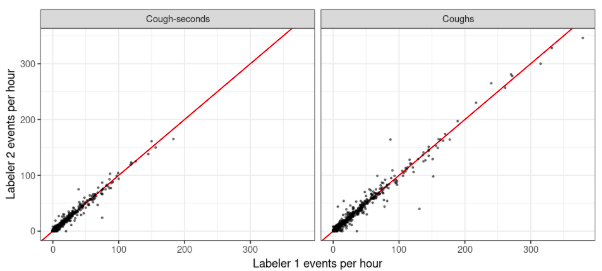
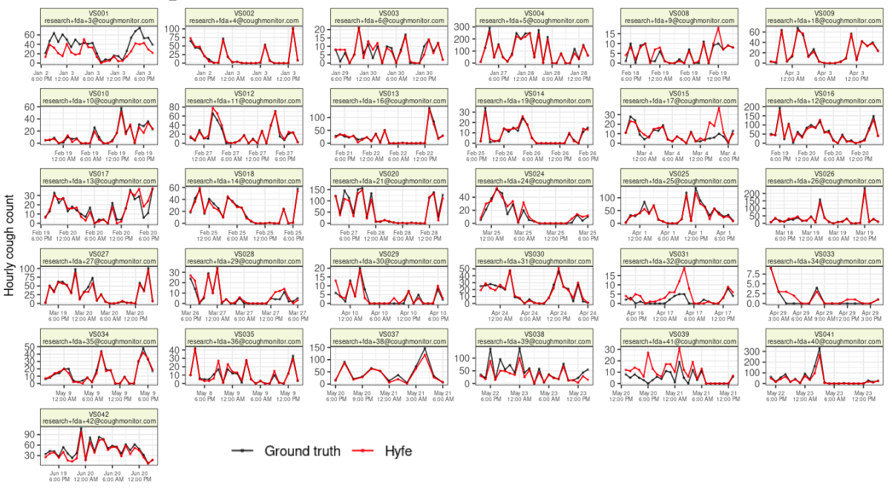
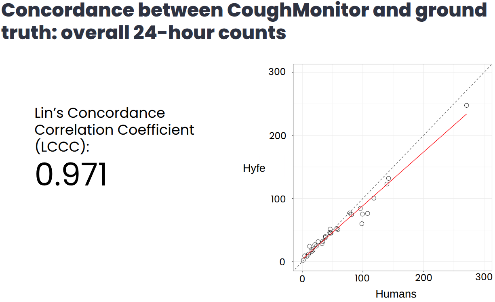

Hyfe carried out a dispersed, observational device accuracy study evaluating the Hyfe Cough Diary (HCD)—a wrist-worn, non-invasive, passive cough monitoring system designed to detect and timestamp cough events in adults with problematic cough. The study was conducted under real-world conditions in the United States between December 2024 and June 2025 and followed ICH-GCP, FDA regulations, and IRB approval. The study used the same device and algorithm used in the CMS.
A decentralized prospective observational investigation in which each
participant wore:
– the investigational Cough Watch (running Hyfe’s detection algorithm),
and
– a second research smartwatch continuously recording ambient audio for
human annotation.
– Participants were monitored over a continuous 24-hour period during
their normal daily living activities.
– Human annotators labeled every cough in the full audio recordings
(18,305 coughs), with disagreements adjudicated by an expert reviewer to
produce a high-fidelity ground truth dataset.
– Comparison was performed at daily, hourly, and event levels,
accounting for timestamp offsets and clock drift.
– Inclusion required ≥20 hours of valid simultaneous recordings; 31
participants (730.84 person-hours) met criteria.
– Adults ≥21 years old with problematic cough (mean age 57; 23
female).
– Diverse etiologies were represented, including RCC/UCC (13), asthma
(5), bronchiectasis (4), GERD (4), NTM (2), allergies (2), acute cough
(2), laryngeal neuropathy (2), UACS (2), and others.
– Participants were recruited from typical living environments, with
exclusion only for unusually loud settings or major antitussive therapy
changes.
– Primary Objective: Assess hour-by-hour agreement between HCD and
human annotators using Bland–Altman methods.
– Secondary Objectives:
– Event-level accuracy (sensitivity, false positives, PPV)
– Daily and hourly concordance via linear and Deming regression
– Subgroup, diurnal, and rate-stratified performance analyses.
– Daily and hourly concordance: Lin’s Concordance Correlation
Coefficient >0.95 for both coughs and cough-seconds.
– Event-level detection:
- Median sensitivity 87.3% (coughs) and 90.5% (cough-seconds).
– False positives: Median ~1.7 per hour.
– Categorization accuracy:
– 84% correct category classification of patients (none off by >1
ordinal level).
– 78% correct hour-level classification; 95% correct or off by one
level.
– Zero instances of long sequences of major misclassification.
– No adverse events, no device-related harms, and no device
failures.
Agreement in hourly cough counts between two independent labelers:

Patient-specific Hyfe vs ground truth cough counts:

Correlation between daily cough counts, Hyfe vs ground truth:

https://docs.google.com/document/d/1GOAunJCbHu4t0gpaIQJkn_DWW9mg7MNmdVkt_vuvSTc/edit?usp=sharing